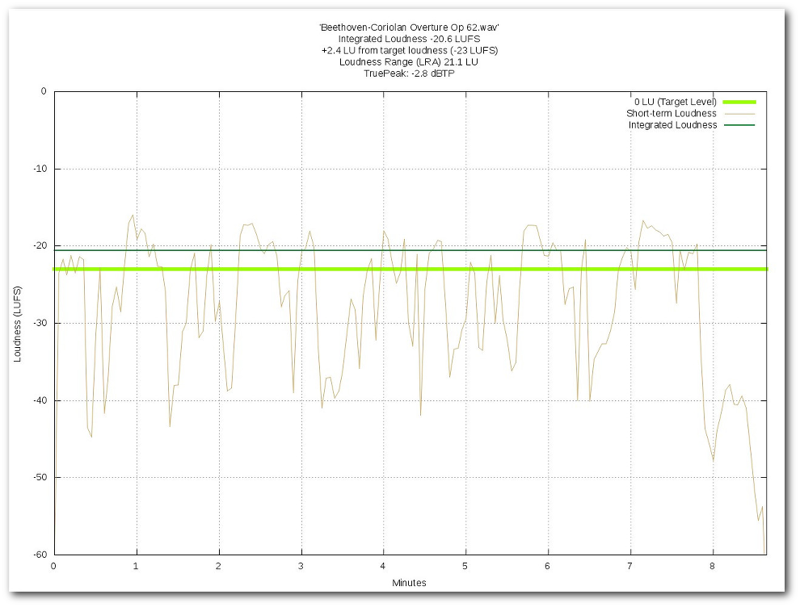

FreeLCS Free Loudness Correction Server
[FAQ] [Features] [User Manual] [Downloads]
[Changelog]
FreeLCS stands for Free Loudness Correction Server.
FreeLCS lets you automatically correct audio files to EBU R128 target
loudness level -23 LUFS. Beginning from version 3.6 it is also possible to
change the target loudness in range of -31 LUFS to -12 LUFS.
The software lets you easily set up a server that shares one of it's folders
to the network. Users of your network can then drop audio files to the
server for automatic loudness correction. For each processed file the server
also creates a loudness history graphics file which shows loudness
variations inside the file.
The software is very fast even on modest hardware giving 15 times faster
than realtime processing (16 bit stereo files, TruePeak measurement turned
on) on a server with one Intel Core 2 Duo processor, 4 GB Ram, 3 internal
Sata disks in software RAID 0.
FreeLCS uses other open source programs to get the job done (Linux,
libebur128, gnuplot, FFmpeg / libav-tools (optional), sox, mediainfo). All
software is free and Open Source.
More detailed information can be found in FAQ,
Features and User
Manual.
Latest news:
2024.05.25 FreeLCS 3.10 released.
- This release supports Debian 12, Ubuntu 24.04.
- This is basically the same as release 3.9 since there was no need to
do changes. Most changes in FreeLCS are driven by changes in programs
FreeLCS uses (libebur128, mediainfo, FFmpeg, sox, etc). This year
there weren't any breaking changes in any of these programs.
2023.09.23 FreeLCS 3.9 released.
- This release supports Debian 12, Ubuntu 22.04.
- Disabled FFmpeg dependencies from libebur128 loudness - executable
since they wont build anymore. It seems FFmpeg API has changed and
libebur128 loudness_scanner has not kept up with the changes. However
ffmpeg bindings are not needed for anything in FreeLCS, because it uses
the FFmpeg - executable installed in the os.
2022.07.27 FreeLCS 3.8 released.
- This release supports Debian 11, Ubuntu 22.04 and 20.04.
- Libebur128 upgraded to latest version 1.2.6.
- Libebur128 no longer natively supports 8 bit audio so 8 bit files are
converted to 16 bits if FFmpeg is installed.
- Ubuntu 22.04 and Debian 11 ships with broken mediainfo that hangs
reading some 32 bit files. FreeLCS installs fixed version 22.06
from official mediainfo site: https://mediaarea.net/en/MediaInfo
Older news can be found here.
- Automatically loudness corrects audio files to conform with EBU R128
loudness recommendation.
- Very easy to use, just drop in your file and copy back the loudness
corrected version.
- Creates loudness history graphics that allows the user to see how
loudness varies inside a file (example picture below).
- Supports channel counts from mono to 5.1.
- Supports EBU TruePeak measurement.
- Uses a protective limiter to keep peaks in the allowed range where
needed.
- Takes advantage of multiple processor cores to run calculations
simultaneously.
- User is able to define how many audio files are processed at the same
time, limited only by available cpu processing power and hard disk
bandwidth.
- Supports writing loudness measurement results to a machine readable
file.
- Modest hardware requirements, runs fine with only 4 GB of ram.
- Can be run inside a virtual machine, no need for physical hardware.
- Fast processing. On typical hardware you can expect processing to be
10 - 20 faster than realtime.
- It is possible to chabge target loudness in the range of -31 LUFS to
-12 LUFS making it possible to adjust loudness to a level that is more
compatible with internet media sites (Youtube, Spotify, etc) and mobile
devices.
- Cleans up automatically by deleting all files after a set time delay.
- Sends possible error messages to the admin by email.
- If user installs FFmpeg or libav-tools
then additional features becomes available:
- The wide range of FFmpeg / libav-tools supported formats can be
processed.
- Support for multistream files, all audio streams are extracted and
processed individually.
- Extract audio from wrappers containing both video and audio.
- Remix audio from MXF files to required mixes before loudness
processing.
- All software is free and Open Source. Install in as many computers as
you like.
- Runs on the free Linux operating system, no need to pay for
proprietary os installation.
- Easy to integrate in many workflows.
- Written in Python 3.
- More specific information can be found in the FAQ.

Click here to go
to the download page (User manual is included in the download)
Click here to go to the User manual.
Report a bug